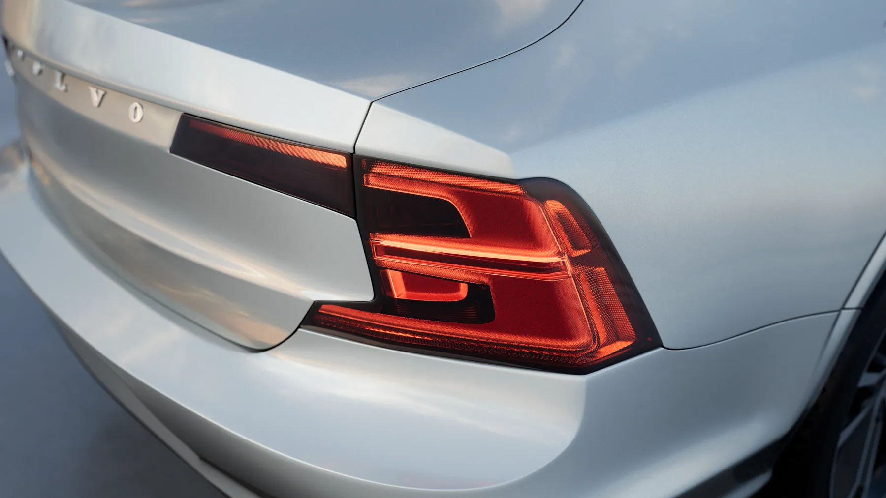
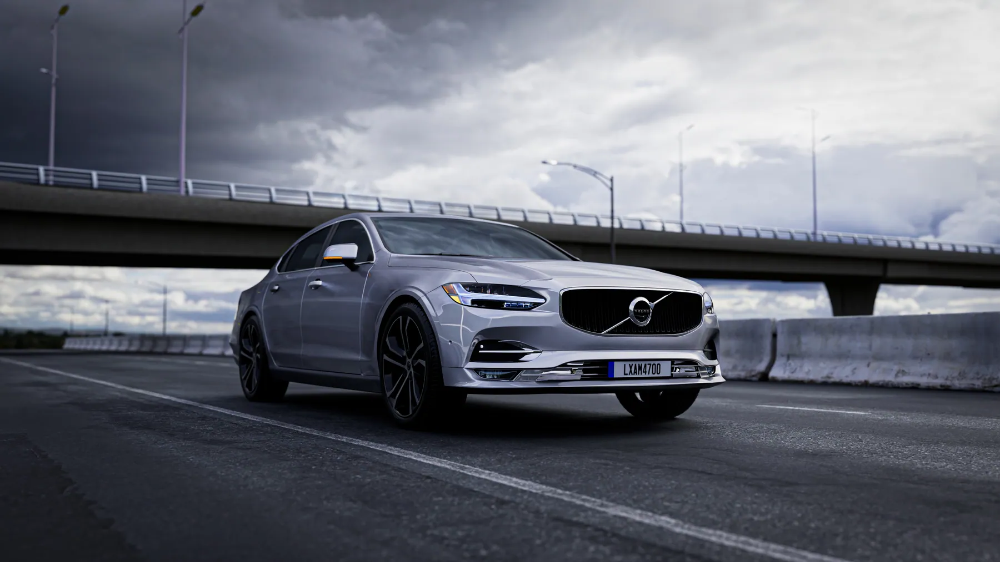
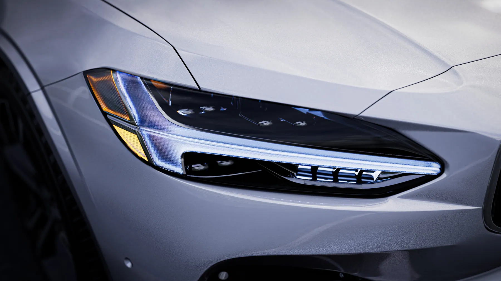
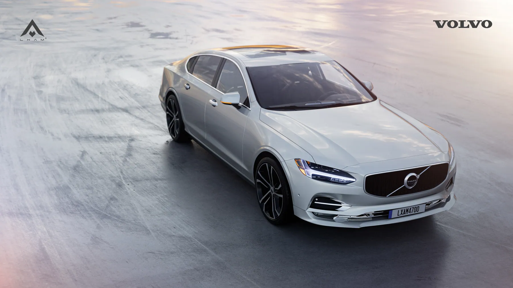

Dự án · Dự án của studio · 2024
Volvo S90: bộ hình chiến dịch
Một bộ hình dựng theo cấu trúc của chiến dịch thật: một key visual gánh thông điệp, một loạt cận cảnh để dùng cho mạng xã hội, và vài cảnh xe chạy trong phố để làm nền cho phần chữ. Cùng một chiếc xe, ba mục đích sử dụng khác nhau.
Bài toán
Ba thứ khó nhất
Sơn trắng rất dễ bị cháy
Trắng là màu ít khoảng an toàn nhất. Chỉ cần đèn mạnh hơn một chút là mảng sáng trên nắp ca-pô mất hết chi tiết, mà mắt người lại nhìn thẳng vào đúng chỗ đó.
Đèn Thor's hammer phải đúng
Dải đèn hình chữ T là thứ nhận diện Volvo. Sai độ dày hoặc sai độ sáng một chút là người quen xe nhận ra ngay, dù không chỉ được ra sai ở đâu.
Cảnh phố cần chiều sâu chứ không cần chi tiết
Xe chạy trong phố lúc chiều tối: điều quan trọng là lớp xa lớp gần và các vệt đèn, không phải dựng chi tiết từng toà nhà. Dựng nhiều ở đó là phí thời gian render.
Hình ảnh
Từng cảnh, và lý do




Cách làm
Bốn bước
Chốt key visual trước
Dựng và duyệt hình gánh thông điệp trước tiên. Nó quyết định tông màu, hướng sáng và chất nền cho toàn bộ các hình còn lại.
Kiểm tra vùng cháy sáng
Với sơn trắng, bật hiển thị vùng quá sáng trước mỗi lần render. Rẻ hơn nhiều so với phát hiện ra ở khâu hậu kỳ.
Cận cảnh dùng lại sân khấu chính
Các shot macro không dựng cảnh mới, chỉ đưa camera vào sát. Nhờ vậy màu sơn và ánh phản chiếu vẫn khớp với key visual.
Cảnh phố dựng theo lớp
Lớp gần dựng chi tiết, lớp xa chỉ là khối và vệt đèn. Chiều sâu đến từ cách xếp lớp, không đến từ số lượng đa giác.
Muốn làm được shot như thế này?
Đây là đúng những kỹ năng trong lộ trình LXAM Academy, dựng hình, ánh sáng, render tách lớp, dựng phim. Học bằng dự án thật, có người sửa bài.